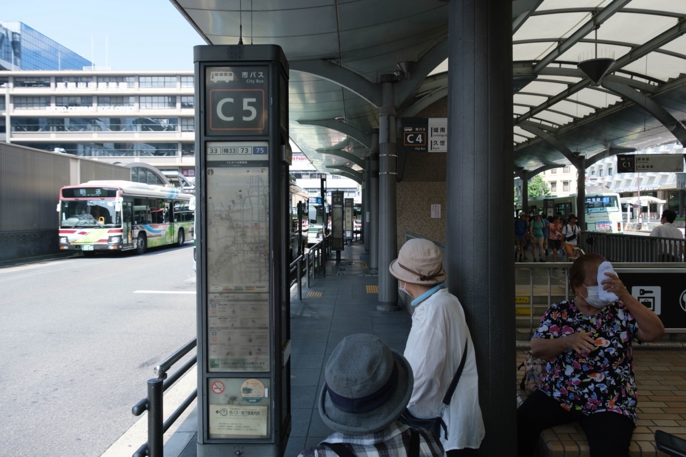
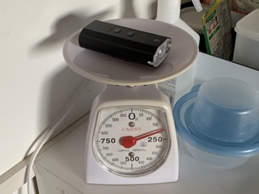

今までのカメラ
背景写真は大学一年の春に京都へ行った時のものです。
この時期は基本的には、コンデジ（RX100）を使っていましたが、旅行なので張り切ってフィルムの一眼レフを持っていきました。
母親の同僚にもらったもので、それが僕が初めて手にしたカメラです。
ファインダーを覗き、ズームレンズを回す感覚がバッチリでとても大好きでした。
その後、自分で買ったRX100はファインダーもないし、ズームが電子制御であんまり楽しくなかった。
それでも、取り回しが良いカメラが一番と信じ込んでいたので2〜3年ぐらい使いました。
EPFL コミュニティラーニングセンター
 